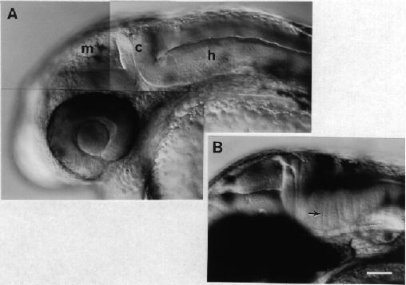

Modified from: Kimmel et al., 1955. Developmental Dynamics 203:253-310. Copyright © 1995 Wiley-Liss, Inc. Reprinted only by permission of Wiley-Liss, a subsidiary of John Wiley & Sons, Inc.
Fig. 30. Neural structures predominate in the head during the pharyngula period. Left side Nomarski views, dorsal to the top, anterior to the left. A: The prominent transverse brain subdivision at the cerebellar (c) primordium shows here at the prim-13 stage (29 h), separating the midbrain (m) and the hindbrain (h). All but the posterior part of the midbrain is sculptured by a distinctive horizontal furrow that separates the midbrain (or optic) tectum (dorsal the furrow) and the midbrain tegmentum (ventral). Rhombomeres give the dorsal surface of the thinner-looking hindbrain a lumpy appearance, although less sthan at an earlier stage (see Fig. 25). The hindbrain's fourth ventricle shows above the hindbrain wall. The eye, with the retina surrounding the lens, is well shown. B: By the prim-25 stage (36 h) the brain walls thicken substantially, but the same subdivisions present earlier are evident. At this stage rhombomere boundaries are indicated by doubled transversely oriented stripes (arrow), formed by developing glial fibers and bundles of commissural axons (Trevarrow et al., 1990). Scale bar: 50 µm.

Figure 30